Боги Олимпа
Имена древнегреческих богов, которые у всех на слуху – Зевс, Гера, Посейдон, Гефест – на самом деле потомки главных небожителей – титанов. Победив их, младшие боги, руководил которыми Зевс, стали обитателями горы Олимп. Греки поклонялись, почитали и отдавали дань богам Олимпа, олицетворявшим в Древней Греции стихии, добродетель или важнейшие сферы общественной и культурной жизни.
Поклонялись Древние греки и Аиду, но он не жил на Олимпе, а обитал под землей, в царстве мертвых.
Кто главнее?
Боги Древней Греции неплохо между собой уживались, но иногда между ними происходили стычки. Из их жизни, которая описана в Древнегреческих трактатах и появились легенды и мифы этой страны. Среди небожителей были те, кто занимал высокие ступени пьедестала почета, другие же довольствовались славой, находясь у ног вершителей. Список богов Олимпии таков:
Зевс
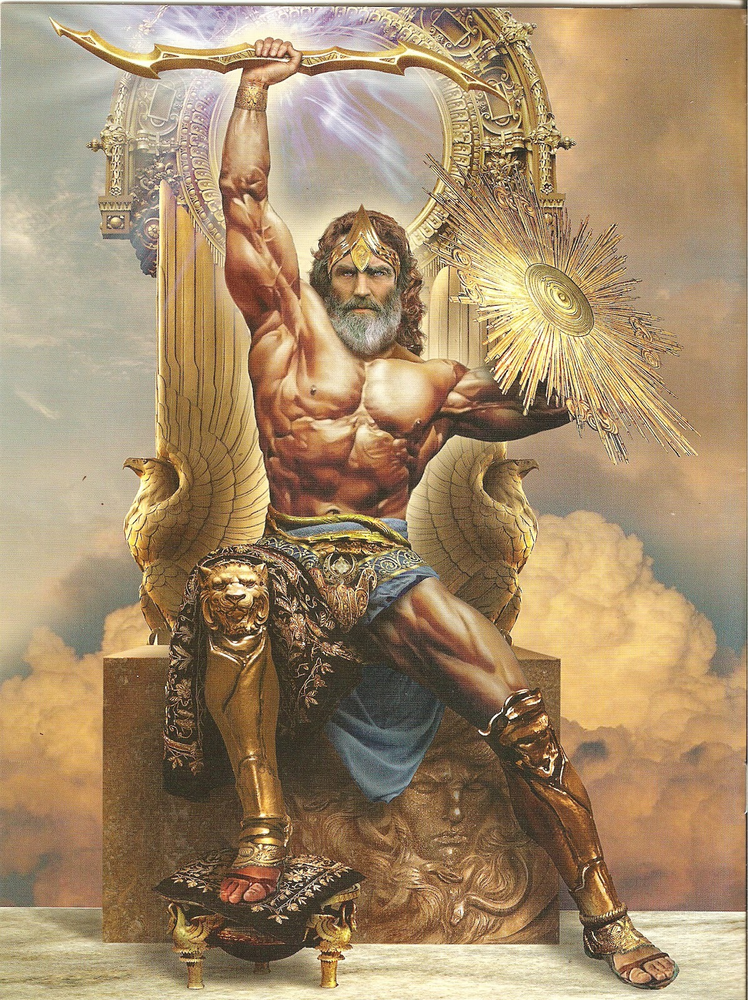
Зевс — самый главный из всех. Он является царем всех богов. Олицетворяет этот громовержец бесконечный небосвод. Под его предводительством молнии. Именно этот вершитель распределяет доброе и злое на планете, считали греки. Сын титанов женился на собственной сестре. Их четверых детей нарекли Илифией, Гебой, Гефестом и Аресом. Зевс – страшный изменник. Он постоянно занимался прелюбодеяниями с другими богинями. Не пренебрегал и земными девушками. Удивить их Зевсу было чем. Он представал перед гречанками то в виде дождя, то лебедем или быком. Символы Зевса – орел, гром, дуб.
Посейдон
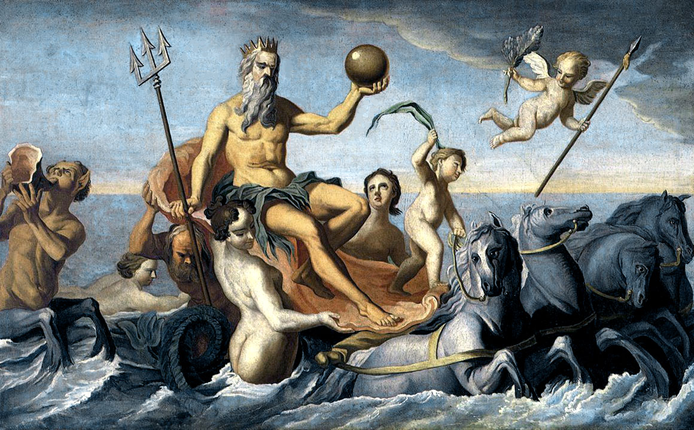
Посейдон. Этот бог властвовал над морской стихией. По значению он стоял на втором месте после Зевса. Кроме океанов, морей и рек, штормов и морских чудищ, Посейдон «отвечал» за землетрясения, вулканы. В древнегреческой мифологии он являлся братом Зевса. Жил Посейдон во дворце под водой. Разъезжал в богатой колеснице, запряженной белыми конями. Трезубец – символ этого греческого бога.
Гера
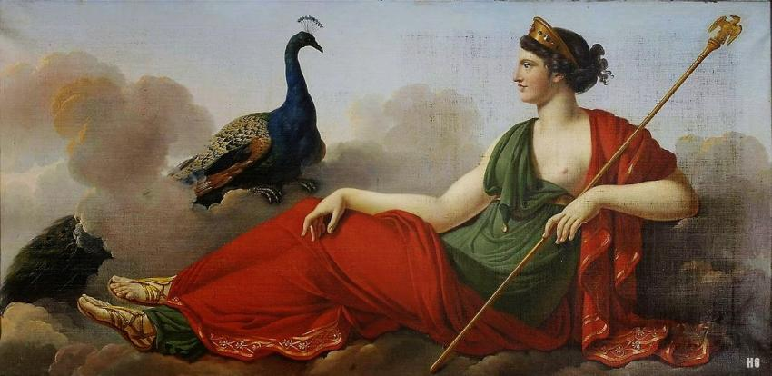
Гера. Она является главной из женщин-богинь. Покровительствует эта небожительница семейным традициям, браку и любовным союзам. Гера – ревнивица. Она жестоко карает людей за прелюбодеяния.
Аполлон
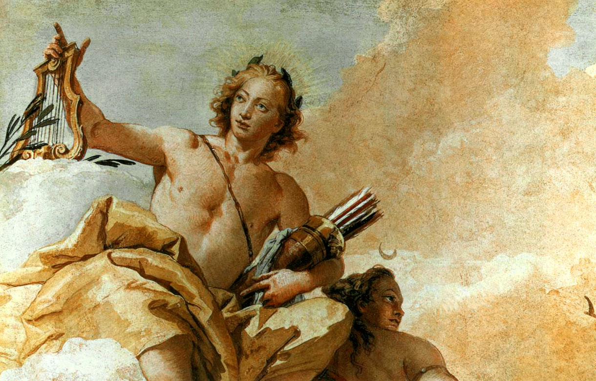
Аполлон – сын Зевса. Он брат-близнец Артемиды. Изначально этот бог являлся олицетворением света, солнца. Но постепенно его культ расширил свои границы. Этот бог превратился в покровителя красоты души, мастерства в искусстве, всего прекрасного. Под его влиянием находились музы. Перед греками он представал в довольно утонченном образе человека с аристократическими чертами. Аполлон прекрасно музицировал Занимался целительством и прорицательством. Он отец бога Асклепия — покровителя докторов. В свое время Аполлон уничтожил страшное чудовище, которое оккупировало Дельфы. За это был сослан на целых 8 лет. Позже он создал свой оракул, символом которого стал лавр.
Артемида
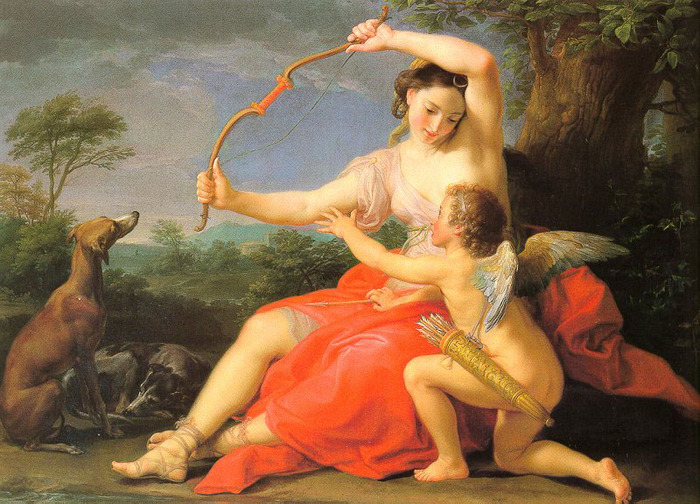
Без Артемиды Древние греки не представляют себе охоты. Покровительница лесов олицетворяет плодородие, рождение и высокие отношения между полами.
Афина
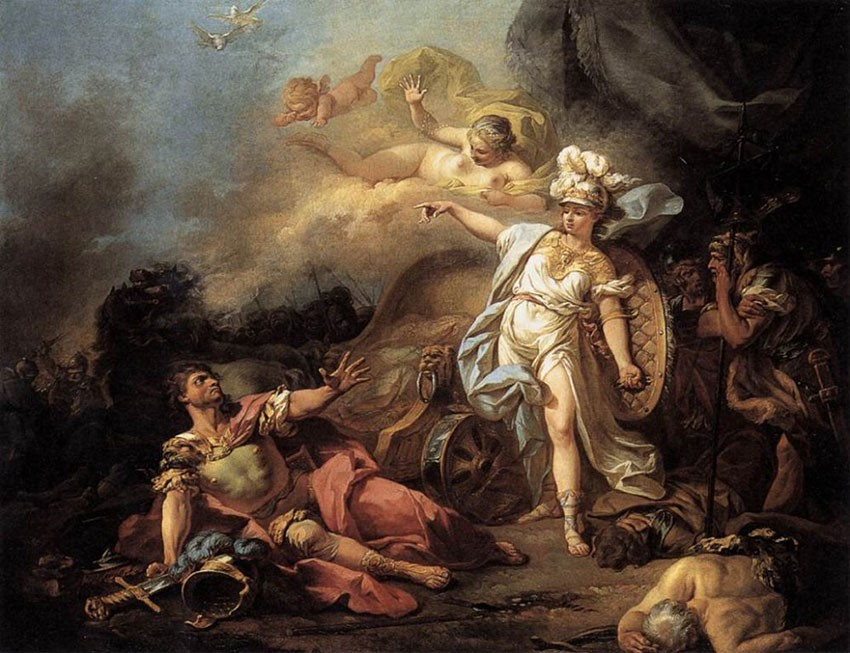
Афина. Все, что относится к мудрости, душевной красоте и гармонии – под покровительством этой богини. Она великая изобретательница, любительница науки и искусства. Ей подчиняются ремесленники и земледельцы. Афина «дает добро» на возведений городов и зданий. Благодаря ей мерно течет государственная жизнь. Эта богиня призвана защищать стены крепостей и замков.
Гермес
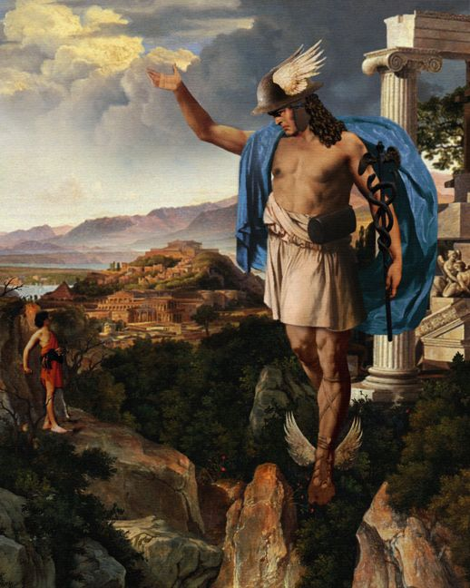
Гермес. Этот древнегреческий бог довольной озорной и заслужил славу непоседы. Гермес покровительствует путешественникам и торговцам. Он является и посланником богов на земле. Это на его пятках впервые засияли прелестные крылышки. Греки приписывают Гермесу черты изворотливости. Он хитер, умен и знает все иностранные языки. Когда Гермес украл десяток коров у Аполлона, чем заслужил его гнев. Но был прощен, поскольку Апполона пленило изобретение Гермеса – лира, которую он и подарил богу прекрасного.
Арес
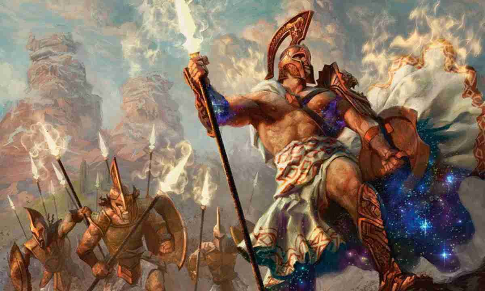
Арес. Этот бог олицетворяет войну и все, что с ней связано. Всевозможные битвы и сражения – под представительством Ареса. Он всегда молод, силен и красив. Греки рисовали его могучим и воинственным.
Афродита
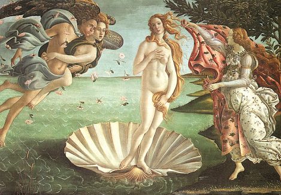
Афродита. Она — богиня любви и чувственности. Афродита постоянно подстрекает своего сына Эрота пускать стрелы, зажигающие огонь любви в сердцах людей. Эрот — прототип римского Амура, мальчика с луком и колчаном.
Гименей
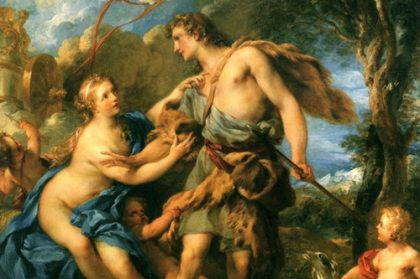
Гименей – бог брака. Его узами связываются сердца людей, встретивших и полюбивших друг друга с первого взгляда. Древнегреческие свадебные песнопения назывались «гименеи».
Гефест
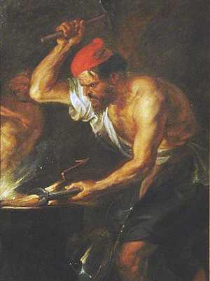
Гефест – бог вулканов и огня. Под его покровительством находятся гончары и кузнецы. Это трудолюбивый и добрый бог. Судьба его сложилась не очень хорошо. От рождения он хромал, поскольку мать Гера выбросила его с горы Олимп. Гефест находился на воспитании богинь — цариц моря. На Олимп он вернулся и щедро одарил Ахилла, преподнеся ему щит, а Гелиосу – колесницу.
Деметра
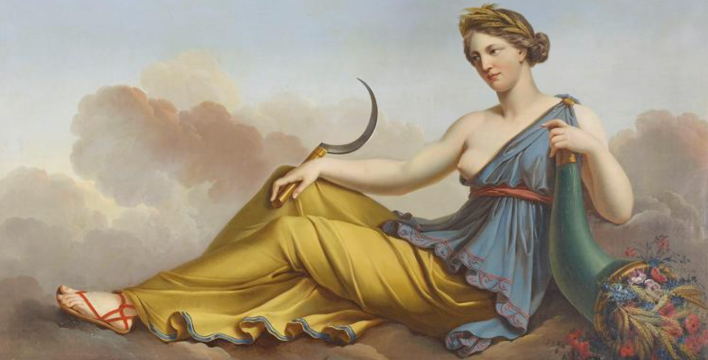
Деметра. Она олицетворяет силы природы, которые покорили люди. Это земледелие. Под зорким контролем Деметры находится вся жизнь человека – от рождения – до смертного одра.
Гестия
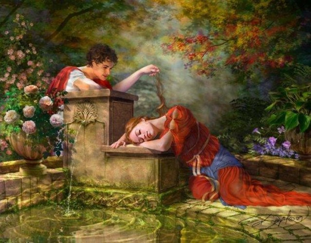
Гестия. Эта богиня покровительствует семейным связям, охраняет домашний очаг и уют. Греки заботились о подношениях Гестии, ставя в своих домах жертвенники. Все жители одного города являются одной большой общиной-семьей, уверены греки. Даже в главном городском здании находился символ жертвоприношений Гестии.
Аид
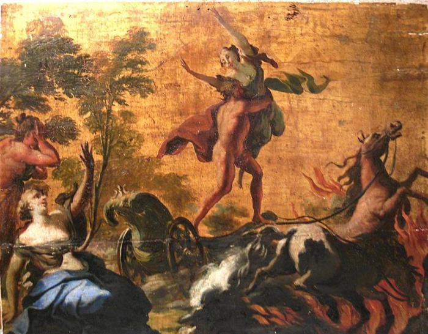
Аид – властелин царства мертвых. В его подземном мире ликуют темные существа, мрачные тени, чудовища-демоны. Аида относят к одному из наиболее могущественных богов. Перемещался по царству Аид в колеснице, сделанной из золота. Кони его черные. Аид – владеет несметными богатствами. Все самоцветы, руды, что заключены в недрах, принадлежат ему. Греки боялись его пуще огня и даже самого Зевса.
Кроме 12 богов Олимпа и Аида, у греков есть еще масса богов и даже полубогов. Все они потомки и братья главных небожителей. У каждого из них есть свои легенды или мифы.